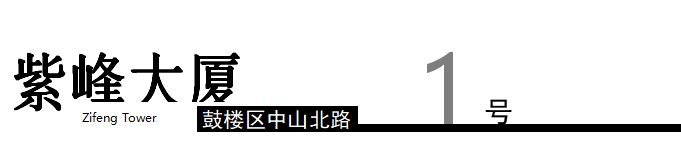
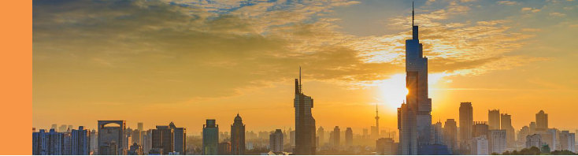
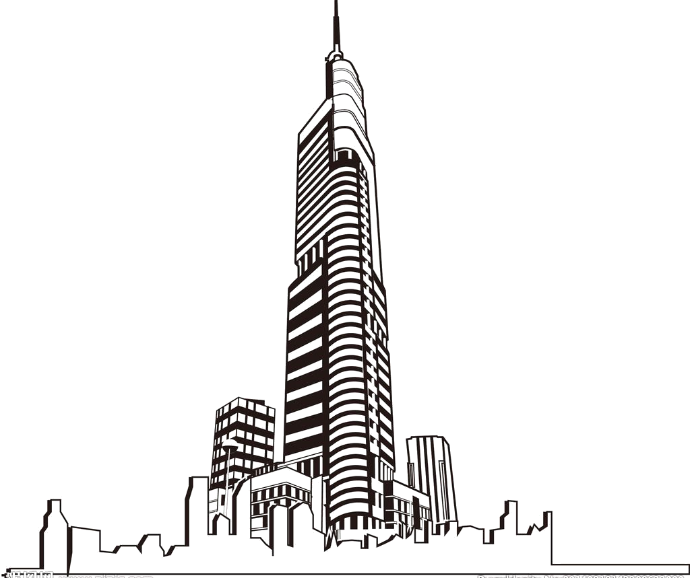

六朝古都南京的核心鼓楼广场，崛起的450米地标建筑绿地广场·紫峰大厦，则是由世界摩天大楼设计泰斗——美国SOM建筑事务所首席设计师Adrian D。史密斯亲自担纲，在历史积淀深厚的南京，身为美国人的史密斯同样开始回归元文化，在查阅了大量南京的史料，深刻解读城市文化之后，史密斯设计师在建筑中融入了中国古老的蟠龙文化，蜿蜒流淌的扬子江以及花园城市的意象，独特的单元结构三角玻璃幕墙如龙鳞沿建筑盘旋而上，阳光下巨龙奋起，辉映南京的城市气质。

南京紫峰大厦占地面积为18721平方米， 总建筑面积为261075平方米，其中主楼地上89层，地下4层，总高度450米。副楼地上24层。裙房地上7层。南京紫峰大厦1-6层为商业中心，层高6米；8-9层为健身中心；10-41层为办公区，层高4.2米；42-71层为酒店，层高3.8米；72层为观光厅，距离地面281.8米，观光厅四周为全景落地玻璃，可以360度环视南京全景，观光厅内还设有冰饮区、咖啡吧、纪念品商店，以及空中邮局等配套设置。76-79层为餐厅；80-81层为总统套房；82层为绿地MOUNT俱乐部。
